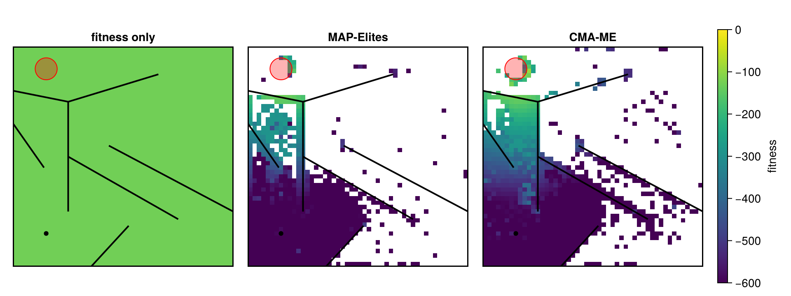
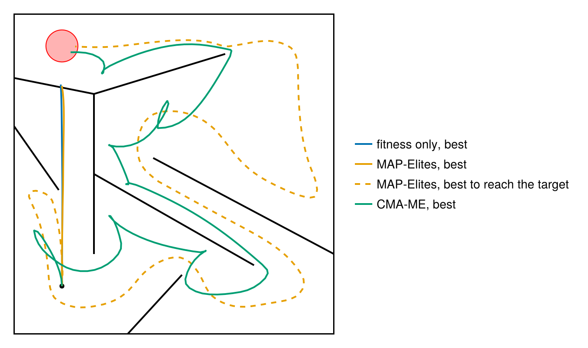
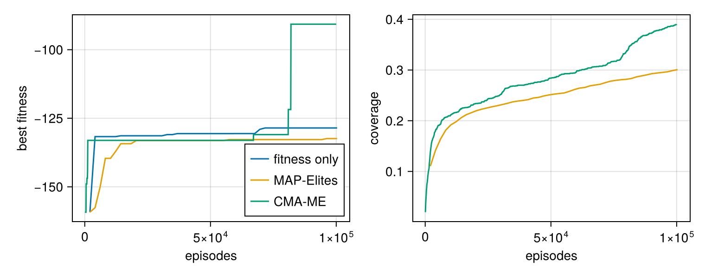

A deceptive maze
A small two-wheeled robot must drive from the bottom left of a maze to a target at the top left. A wall separates the two, so the shortest way is not the way there: the robot has to drive away from the target, through a funnel to the right, and round. A search that only rewards being close to the target drives the robot toward the wall below the target and stays there. Lehman and Stanley (2011, "Abandoning objectives") made such deceptive mazes a test of searches that reward novelty instead; quality-diversity algorithms pass them by keeping, for every place in the maze, the controller that ends there best.
The robot, its sensors and the maze are those of the "standard" target task of Kheperax (Grillotti and Cully, 2023), a JAX version of the fastsim simulator of Mouret and Doncieux (2012), which many QD papers use. The controller is a small neural network, and the genotype is the vector of its weights: this is policy search without gradients, a typical reinforcement-learning problem solved by evolution.
Set up once, from the repository root:
julia --project=examples -e 'using Pkg; Pkg.develop(path="."); Pkg.instantiate()'Run:
julia --project=examples examples/maze.jlusing QualityDiversity
using Random: AbstractRNG, Xoshiro
using StaticArrays: SMatrix, SVectorThe maze
The maze is the unit square with nine walls, each a segment between two points; two of them lie along the border, where Kheperax needs them for its mazes of four copies. The robot starts at (0.15, 0.15) facing up, and the target is a disk of radius 0.05 around (0.15, 0.9).
const Position = SVector{2,Float64}
const Wall = Tuple{Position,Position}
wall(x1, y1, x2, y2) = (Position(x1, y1), Position(x2, y2))
const WALLS = Wall[wall(0.25, 0.25, 0.25, 0.75), # vertical middle
wall(0.14, 0.45, 0.0, 0.65), # obstacle top left
wall(0.25, 0.75, 0.0, 0.8), # wall below the target
wall(0.25, 0.75, 0.66, 0.875), # wall top right
wall(0.355, 0.0, 0.525, 0.185), # obstacle bottom right
wall(0.25, 0.5, 0.75, 0.215), # funnel bottom
wall(1.0, 0.25, 0.435, 0.55), # funnel top
wall(0.0, 0.8, 0.0, 1.0), # along the border
wall(0.355, 0.0, 1.0, 0.0), # along the border
wall(0.0, 0.0, 1.0, 0.0), # the border
wall(0.0, 0.0, 0.0, 1.0),
wall(0.0, 1.0, 1.0, 1.0),
wall(1.0, 1.0, 1.0, 0.0)]
const START = Position(0.15, 0.15)
const START_ANGLE = π / 2
const TARGET = Position(0.15, 0.9)
const TARGET_RADIUS = 0.050.05The robot
The robot is a disk of radius 0.015. It sees the maze through three lasers, at -45°, 0° and 45° from its heading, that measure the distance to the nearest wall up to 0.2, and it feels walls with two bumpers, left and right, that read 1 when they touch one and -1 otherwise. The two wheels are 0.03 apart and each moves at most 0.025 per step.
const RADIUS = 0.015
const LASER_ANGLES = (-π / 4, 0.0, π / 4)
const LASER_RANGE = 0.2
const MAX_SPEED = 0.0250.025The geometry follows Kheperax: a laser is the segment from the robot's center to the end of its range, and it measures the distance to the first wall it crosses.
cross2(a, b) = a[1] * b[2] - a[2] * b[1]
counterclockwise(a, b, c) = (c[2] - a[2]) * (b[1] - a[1]) > (b[2] - a[2]) * (c[1] - a[1])
function crosses((p1, p2), (q1, q2))
return counterclockwise(p1, q1, q2) != counterclockwise(p2, q1, q2) &&
counterclockwise(p1, p2, q1) != counterclockwise(p1, p2, q2)
end
function intersection((p1, p2), (q1, q2))
d = cross2(p1 - p2, q1 - q2)
return (cross2(p1, p2) * (q1 - q2) - cross2(q1, q2) * (p1 - p2)) / d
end
function laser(position, angle)
beam = (position, position + LASER_RANGE * Position(cos(angle), sin(angle)))
nearest = Inf
for w in WALLS
if crosses(beam, w)
nearest = min(nearest, hypot((intersection(beam, w) - position)...))
end
end
return isfinite(nearest) ? clamp(nearest, 0.0, LASER_RANGE) : LASER_RANGE
endlaser (generic function with 1 method)The point of a wall nearest to the robot's center tells whether the robot touches the wall, and on which side.
function nearest_point(position, (a, b))
u = clamp(sum((position - a) .* (b - a)) / sum(abs2, b - a), 0, 1)
return a + u * (b - a)
end
touches(position) = any(w -> hypot((nearest_point(position, w) - position)...) <= RADIUS, WALLS)
function bumpers(position, heading)
left = right = -1.0
for w in WALLS
offset = nearest_point(position, w) - position
hypot(offset...) < RADIUS || continue
side = mod(atan(offset[2], offset[1]) - heading + π, 2π) - π
-π / 2 < side <= 0 && (left = 1.0)
0 <= side < π / 2 && (right = 1.0)
end
return left, right
endbumpers (generic function with 1 method)Each wheel moves the robot along an arc. The wheel speeds vl and vr turn it by (vr - vl) / 0.03; equal speeds move it straight ahead.
normalize_angle(angle) = mod(angle + π, 2π) - π
function drive(position, heading, vl, vr)
turn = (vr - vl) / (2RADIUS)
abs(turn) > 1e-10 || return position + vl * Position(cos(heading), sin(heading)), heading
r = vl / turn + RADIUS
dx, dy = (cos(turn) - 1) * r, sin(turn) * r
φ = heading - π / 2
step = Position(dx * cos(φ) - dy * sin(φ), dx * sin(φ) + dy * cos(φ))
return position + step, normalize_angle(heading + normalize_angle(turn))
enddrive (generic function with 1 method)The controller
The controller is the policy network of Kheperax: the five sensor readings go through a hidden layer of 8 rectified linear units to two outputs squashed by tanh, one per wheel. Its 66 weights and biases are the genotype.
const N_INPUTS, N_HIDDEN, N_OUTPUTS = 5, 8, 2
const N_WEIGHTS = N_HIDDEN * (N_INPUTS + 1) + N_OUTPUTS * (N_HIDDEN + 1)
function policy(θ, sensors)
W1 = SMatrix{N_HIDDEN,N_INPUTS}(ntuple(k -> θ[k], Val(N_HIDDEN * N_INPUTS)))
b1 = SVector{N_HIDDEN}(ntuple(k -> θ[N_HIDDEN * N_INPUTS + k], Val(N_HIDDEN)))
offset = N_HIDDEN * (N_INPUTS + 1)
W2 = SMatrix{N_OUTPUTS,N_HIDDEN}(ntuple(k -> θ[offset + k], Val(N_OUTPUTS * N_HIDDEN)))
b2 = SVector{N_OUTPUTS}(ntuple(k -> θ[offset + N_OUTPUTS * N_HIDDEN + k], Val(N_OUTPUTS)))
hidden = max.(W1 * sensors + b1, 0)
return tanh.(W2 * hidden + b2)
endpolicy (generic function with 1 method)Kheperax draws the initial weights of a layer uniformly within ±sqrt(3 / fan_in) (LeCun's uniform initialization) and sets the biases to zero.
function random_controller(rng::AbstractRNG)
θ = zeros(N_WEIGHTS)
lecun(fan_in) = sqrt(3 / fan_in) * (2rand(rng) - 1)
for k in 1:(N_HIDDEN * N_INPUTS)
θ[k] = lecun(N_INPUTS)
end
offset = N_HIDDEN * (N_INPUTS + 1)
for k in 1:(N_OUTPUTS * N_HIDDEN)
θ[offset + k] = lecun(N_HIDDEN)
end
return θ
endrandom_controller (generic function with 1 method)An episode
An episode lasts at most 1000 steps (the default in the code of Kheperax; its README says 250). Each step, the robot reads its sensors, the network sets the wheel speeds, and the robot moves. The fitness is the sum over the steps of minus the distance to the target, so the robot gains by getting close early; the episode ends when the robot enters the target. The descriptor is where the robot ends.
Three details follow Kheperax. A robot that touches a wall stops for the rest of the episode, since a move is refused whenever the robot touches a wall before it. The bumpers report the contact from before the move. And the descriptor is the position at the start of the last step.
rollout can also record the path, for the figures below.
function sensors(position, heading, (left, right))
return SVector(laser(position, heading + LASER_ANGLES[1]),
laser(position, heading + LASER_ANGLES[2]),
laser(position, heading + LASER_ANGLES[3]), left, right)
end
function rollout(θ; path=nothing, steps=1000)
position, heading = START, START_ANGLE
reading = sensors(position, heading, bumpers(position, heading))
fitness = 0.0
final = position
for _ in 1:steps
isnothing(path) || push!(path, position)
final = position
vl, vr = clamp.(MAX_SPEED .* policy(θ, reading), -MAX_SPEED, MAX_SPEED)
contact = bumpers(position, heading)
if !touches(position)
position, heading = drive(position, heading, vl, vr)
end
reading = sensors(position, heading, contact)
distance = hypot((TARGET - position)...)
fitness -= distance
distance < TARGET_RADIUS && break
end
isnothing(path) || push!(path, position)
return fitness, final
endrollout (generic function with 1 method)The descriptor space is the unit square.
prob = QDProblem(rollout; init=random_controller, bounds=((0.0, 1.0), (0.0, 1.0)))Three searches
Every search gets the same budget of 100 000 episodes. MAP-Elites uses the settings of the Kheperax example: a 50 × 50 grid over the maze, batches of 2048 and Gaussian steps of 0.2 on every weight (IsoLineVariation(0.2, 0.0), QDax's isoline_variation without its line term). The same algorithm with a grid of one cell keeps only the best controller found: an ordinary evolutionary algorithm that only sees the fitness. CMA-ME runs five CMA-ES searches over the weights, each rewarded for what it adds to the archive.
budget = 100_000
variation = IsoLineVariation(0.2, 0.0)
runs = ["fitness only" => MAPElites(prob; dims=(1, 1), batch_size=2048, variation),
"MAP-Elites" => MAPElites(prob; dims=(50, 50), batch_size=2048, variation),
"CMA-ME" => CMAME(prob; dims=(50, 50), sigma0=0.2)]
results = [name => solve(prob, alg; budget, rng=Xoshiro(1)) for (name, alg) in runs]The fitness lies between -1000 sqrt(2) and zero, so that is the offset of the QD score, as in Kheperax.
offset = 1000 * sqrt(2)
[(name, coverage(r.archive), qd_score(r.archive; offset), max_fitness(r.archive)) for (name, r) in results]3-element Vector{Tuple{String, Float64, Float64, Float64}}:
("fitness only", 1.0, 1285.670366687392, -128.54319568570313)
("MAP-Elites", 0.3008, 612497.8731352154, -132.40993902961972)
("CMA-ME", 0.3904, 833089.8312649042, -90.69417007058547)Where the robots end
Each heatmap shows the fitness of the best controller that ends in every cell of the maze. The search that only follows the fitness holds one controller, which ends against the wall below the target. MAP-Elites and CMA-ME spread over the maze from the start, and both find the way: up the right side and back along the top into the target. CMA-ME covers more of the maze and its robots arrive sooner.
using CairoMakie
function draw_maze!(ax)
linesegments!(ax, [p for w in WALLS for p in w]; color=:black, linewidth=2)
poly!(ax, Circle(Point2f(TARGET...), TARGET_RADIUS); color=(:red, 0.3), strokecolor=:red,
strokewidth=1)
scatter!(ax, [Point2f(START...)]; color=:black, marker=:circle, markersize=8)
hidedecorations!(ax)
return ax
end
fig = Figure(size=(960, 360))
for (column, (name, r)) in enumerate(results)
ax = Axis(fig[1, column]; title=name, aspect=1, limits=(0, 1, 0, 1))
heatmap!(ax, r.archive; colorrange=(-600, 0))
draw_maze!(ax)
end
Colorbar(fig[1, 4]; colorrange=(-600, 0), label="fitness")
fig
The deception in one archive
The fitness adds up the distance to the target at every step, so a robot that drives straight up and waits at the wall below the target, about 0.12 away, scores better than one that takes the long way round. In the archive of MAP-Elites the best controller is such a waiting one, while the controllers that reach the target sit in other cells with a lower fitness. rollout with a path records the positions of the robot; we draw the best controller of each search, and the best one that reaches the target.
path_of(θ) = (path = Position[]; rollout(θ; path); path)
reaches(θ) = hypot((last(path_of(θ)) - TARGET)...) < TARGET_RADIUS
ranked(archive) = [x for (x, ev) in sort!(collect(QualityDiversity.elites(archive)); by=((x, ev),) -> -ev.fitness)]
colors = Makie.wong_colors()
fig = Figure(size=(640, 400))
ax = Axis(fig[1, 1]; aspect=1, limits=(0, 1, 0, 1))
draw_maze!(ax)
for (i, (name, r)) in enumerate(results)
controllers = ranked(r.archive)
lines!(ax, Point2f.(path_of(first(controllers))); color=colors[i], linewidth=2,
label="$name, best")
k = findfirst(reaches, controllers)
isnothing(k) || k == 1 ||
lines!(ax, Point2f.(path_of(controllers[k])); color=colors[i], linewidth=2, linestyle=:dash,
label="$name, best to reach the target")
end
Legend(fig[1, 2], ax; framevisible=false)
colsize!(fig.layout, 1, Aspect(1, 1.0))
resize_to_layout!(fig)
fig
Progress
The search that only follows the fitness climbs fast and then stops, at the wall below the target, as does the best fitness of MAP-Elites. CMA-ME's best fitness jumps when its robots reach the target fast enough to beat the waiting ones. The coverage of the two grids grows all the while. (The archive of one cell is always full, so it has no coverage curve.)
fig = Figure(size=(760, 300))
ax_best = Axis(fig[1, 1]; xlabel="episodes", ylabel="best fitness")
ax_coverage = Axis(fig[1, 2]; xlabel="episodes", ylabel="coverage")
for (i, (name, r)) in enumerate(results)
episodes = [h.n_evals for h in r.history]
lines!(ax_best, episodes, [h.max_fitness for h in r.history]; color=colors[i], label=name)
QualityDiversity.capacity(r.archive) > 1 &&
lines!(ax_coverage, episodes, [h.coverage for h in r.history]; color=colors[i])
end
axislegend(ax_best; position=:rb)
fig